linux编译
make linux MALLOC_STATICLIB= SKYNET_DEFINES=-DNOUSE_JEMALLOC
网络流程图
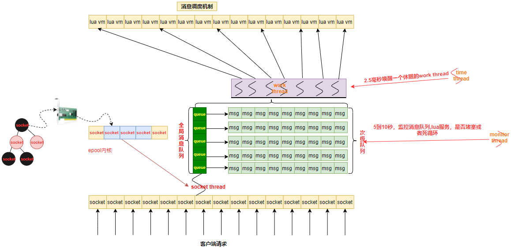
work线程和次级队列
每个在线客户端在Skynet服务器上都对应有一个Socket与其连接，一个Socket在Skynet内部对应一个Lua虚拟机和一个客户特定的消息队列per client mq。当客户特定消息队列中有消息时，该队列会挂载到全局队列global message queue上供工作线程worker Threads进行调度处理。
一个Socket线程socket thread会轮询所有的Socket，当收到客户端请求后将请求打包成一个消息，发送到该Socket对应的客户特定消息队列per client mq中，然后将该消息队列挂到全局队列队尾。
多个Worker工作线程worker threads从全局队列头部获取客户特定消息队列，从客户特定消息队列中取出一个消息进行处理，处理完毕后再将消息队列重新挂到全局队列队尾。
skynet中不同服务是利用系统的多线程完全并行的，当你从服务A向服务B和服务C分别各自发送一条消息时，并不能保证先发的消息先被处理。而当你从服务A向服务B依次发送两条消息时，先发的消息一定会被服务B先处理。
使用Lua实现的服务只是一个内嵌了Lua虚拟机的服务，也遵守上面的规则。如果服务B是一个Lua服务，当服务A向服务B发送两条消息x和y时，Skynet一定保证x先被服务B中的Lua虚拟机接收到，并为消息x生成要给协程X，并运行这个协程。然后才会接收到消息y，并重新生成一个新的协程Y并运行。
同步问题
同步也是skynet存在的问题，当一个服务call其他服务时，当前协程会挂起，但是这个服务还可以接受并处理其他消息。如果多个协程改到同一个数据，你不做同步处理就无法确定这个数据会是多少。
这样的例子特别常见，比如，服务正当处理玩家login请求，刚好遇到call挂起，这时候又有新的请求到来，比如logout，服务就会转去处理logout消息。那玩家究竟是login，还是logout？
当然，同步问题也容易解决，加多一个state的标识和一个协程列表，操作执行时，将state置doing，其他协程判断state=doing时就将自己加到协程列表，然后 skynet.wait。在操作执行完后，重置state，然后遍历协程列表依次 skynet.wakeup(co) ，最后将协程列表置空。
解释此队列
红黑树上的节点是所有监听的socket 黄色底的是interesting 队列 蓝色底是黄色底的子队列 也就是就绪队列 epoll_ctrl() 执行增加操作时候就是往interesting队列塞socket 当有读写事件时候，就会往蓝色底队列放入socket也就是塞入就绪队列 通过epoll_wait()把就绪队列的东西返回出来
线程类型
socket thread: 线程进程消息收发
monitor thread: 线程监控服务是不是陷入死循环，消息是否堵住
time thread: 线程主要用于实现skynet的定时器
work thread线程 对消息队列进行调度
消息流转
- 先从全局队列
pop一个次级队列，然后从次级队列pop一个消息调用回调函数进行逻辑处理- 用完以后如果次级队列不为空或者堵塞，继续把次级队列放入全局队列
启动流程
-
加载配置文件
-
配置文件存入lua的全局变量env
-
创建和启动c服务
logger -
启动引导模块并启动第一个lua服务(
bootstrap) -
然后在通过
bootstrap配置去启动其他的微服务
cluster 两条tcp通道总结
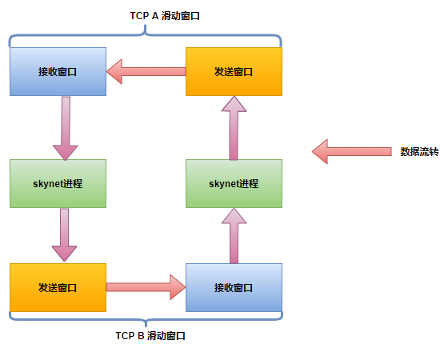
前提
两端是严格分为请求方和回应方。比如 A---> B ，那么只能是A向B提出请求，B 回应它；如果 B----->>A 需要由 B 向 A 再建立一条通道。
TCP特性使得每个TCP连接可以得到均等的带宽。在多用户环境下，一个用户拥有越多TCP连接，获得的带宽越大
1条连接 优点：链接少，对于没有接触过skynet，传统服务器人很容易这种方式连接方式，因为大部分很多都是cs结构程序员过来的 **缺点：**如果断了，数据就无法传输，得重新建立新的连接，上层业务逻辑写起来也麻烦，需要清楚那边是发送方，那边是接受方
2条连接 **优点：**在前面前提的基础上，有两条连接，上层业务逻辑程序员不需要关心我这个时候是client，还是server，只需要通过
cluster.call，cluster.send，接口直接往里面塞数据就行了，多条连接也便于抢带宽 **缺点:**多了一条连接，对cs结构过来的程序员不太容易理解为什么这么弄有好处，或者是不知道有前面那个前提 为什么不在开辟更多的连接，因为开辟更多的链接意义不大，如果这台机器上弄了不少进程，连接数和机器的配置也是有关系的，多了，如果用不上也是一种浪费，同时对于业务程序员来说也逻辑混乱， 因为假如是4条，那么接受方还得区分是那条发过来的数据
master / slave 组网过程
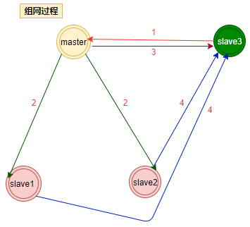
slave3发送sync给master，并启动自己的listenmaster收到信息给已经连接上的slave1，slave2发送slave3请求连接的情况master给slave3发送当前已经连接上的slave数量，并把slave3加入节点组slave1，slave3接收到master发送的信息后，调用connect去连接slave3
master /slave 断网过程
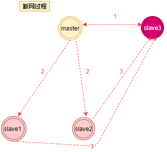
master检测到slave3失去连接，把slave3连接fd置成0master把失去连接的slave3 id广播给slave1，slave2slave1，slave2得到slave3 id之后和slave3断开连接
harbor 服务
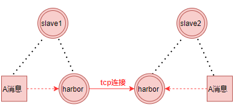
每个节点都有一个harborid，在发送消息的时候会把这个harborid放到消息id的
高8位，所以通过高8位的对比就知道这个消息是远程消息，还是本地消息，如果是远程消息
通过harbor和远程的harbor建立tcp连接发送数据过去，如果是本地直接放入本地节点处理逻辑
消息处理方式
skeynet.send非堵塞不需要应答skynet.call堵塞需要应答skynet.ret回应消息skynet.response请求和相应在不用协程处理skynet.queue串行化消息执行
锁
互斥锁
适用于得到锁以后处理时间>线程切换时间场景 得到锁的线程会被唤醒处理逻辑，没有抢占到锁的线程会进入休眠状态
互斥锁加锁失败以后，会从用户态变成内核态，线程就会释放CPU 给其他线程,会有两次线程上下文的切换成本
- 线程加锁失败时，内核会把线程的状态从
「运行」状态设置为「睡眠」状态，然后把 CPU 切换给其他线程运行 - 接着，当锁被释放时，之前
「睡眠」状态的线程会变为「就绪」状态，然后内核会在合适的时间，把 CPU 切换给该线程运行。
上下文切换的时间，大概在几十纳秒到几微妙之间，所以如果你能确认你被锁住的代码时间很短，那么就不应该用互斥锁，而应该用自旋锁
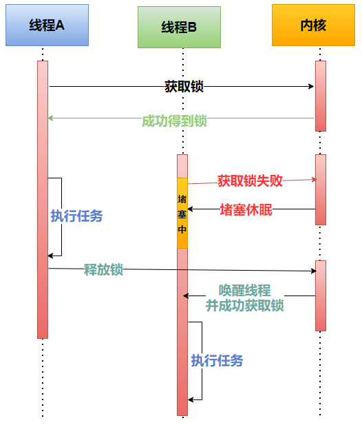
自旋锁
没有获取到权限的的线程不会进入休眠状态一直自旋检测是否能获取资源，适用于得到锁以后处理时间< 线程切换时间的场景，得到锁处理逻辑最好别有IO操作或者文件流操作
自旋锁是通过cpu的CAS函数，在用户态就完成了加锁和解锁操作，所以不会有上下文的切换，相比互斥锁来说，会快一点
一般加锁的过程有两步
- 查看锁的状态，如果锁是空闲的，那么执行第二步
- 将锁设置为当前线程持有
自旋锁加锁失败以后线程会忙等待，直到它能拿到锁
读写锁
实现在rwlock.h中
读锁是共享锁概念，其他锁去读的时候读取的是共享的资源，
写锁是独占概念，其他锁只能等待抢占到的锁释放资源，适用于读多写少场景
所以更具场景可以分为读优先锁和写优先锁
读优先锁
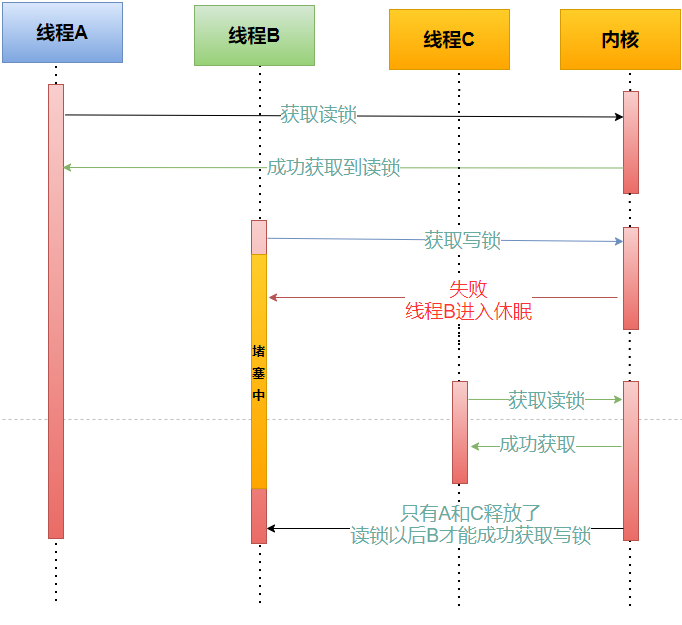
读优先锁对于读线程并发性更好，但是也不是没有问题，我们试想一下，如果一直有读线程获取锁，那么写线程就会被饿死
写优先锁
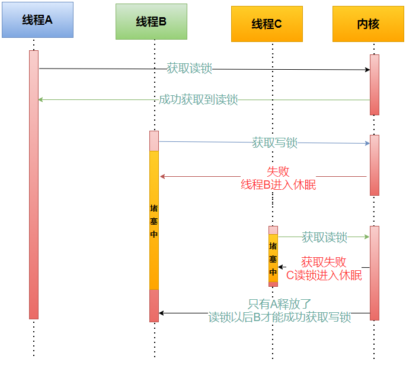
写优先锁可以保证写线程不被饿死，但是如果一直有写线程获取，那么读线程也会被饿死
所以不管是优先读锁还是写锁，对方都可能被饿死，所以我们不偏袒任何一方，搞个公平读写锁
公平读写锁
用队列把获取锁的线程排队，不管是写线程还是读线程都按照先进先出的规则加锁，这样读线程一样能并发，也不会出现饥饿现象
乐观锁和悲观锁区别
悲观锁做事比较悲观，他认为多线程同时修改共享资源的概率比较高，所以在访问资源之前都会先上一把锁。
乐观锁正好相反，他认为多线程同时修改共享资源的概率比较低，所以会让先修改完资源，然后在判断是不是有冲突，有没有其他的线程在修改资源，如果有的话就直接放弃本次操作，
互斥锁、自旋锁、读写锁，都是属于悲观锁
重入锁
就是能一条线程上能重复获取的锁，而不导致死锁
cluster 模式
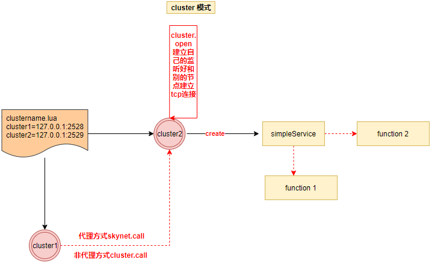
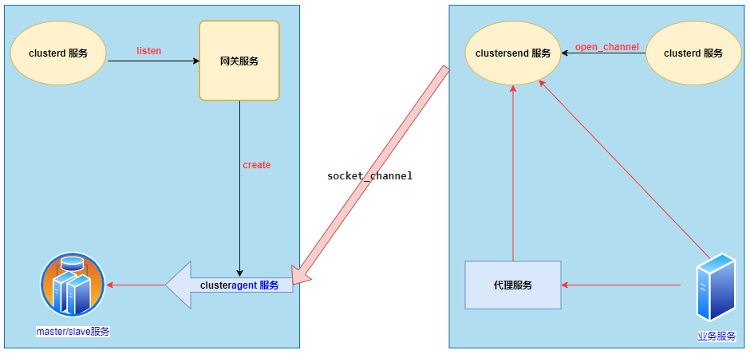
在每个 skynet 节点（单个进程）内，启动一个叫 clusterd 的服务。所有需要跨进程的消息投递都先把消息投递到这个服务上，再由它来转发到网络。
- 首选通过
clustername.lua配置表配置好全部的cluster节点 - 在所有要发现的节点上执行
require"skynet.cluster" - 用
cluster.open建立自己的监听好让别的节点和自己建立tcp通道连接 - 通过
cluster.register注册create的service - 远程节点利用
cluster.query()来得到注册过的节点 - 通过
cluster.callskynet.callcluster.sendskynet.send来调用远程function1function2函数
简易的mmo 架构
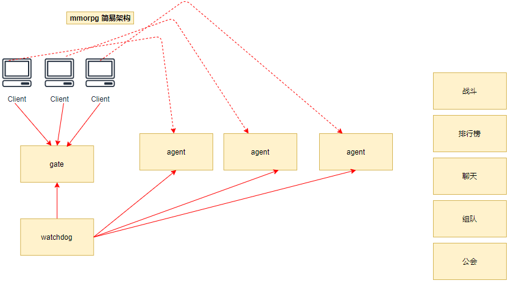
网关服务
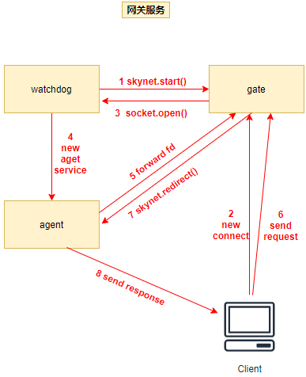
main.lua建立watchdogwatchdog通过skynet.start()创建gateServicegateService并通过rpc调用watchdogService socket.open函数watchdogService通过socket.open创建agenServiceagenService把fd forward给gateServiceclient发送请求给gateServicegateService把请求重定向给agentServiceagentService把处理结果返回给client
协程
coroutine 实现 详细代码见lcorolib.c
派发消息
function skynet.dispatch_message(...)
-- 当前消息处理
local succ, err = pcall(raw_dispatch_message,...)
while true do
-- 顺序执行skynet.fork 创建的协程
if fork_queue.h > fork_queue.t then
-- queue is empty
fork_queue.h = 1
fork_queue.t = 0
break
end
-- pop queue
local h = fork_queue.h
local co = fork_queue[h]
fork_queue[h] = nil
fork_queue.h = h + 1
local fork_succ, fork_err = pcall(suspend,co,coroutine_resume(co))
if not fork_succ then
if succ then
succ = false
err = tostring(fork_err)
else
err = tostring(err) .. "\n" .. tostring(fork_err)
end
end
end
assert(succ, tostring(err))
end
处理当前消息
local function raw_dispatch_message(prototype, msg, sz, session, source)
-- skynet.PTYPE_RESPONSE = 1, read skynet.h
if prototype == 1 then -- 对回应类型的包处理
local co = session_id_coroutine[session]
if co == "BREAK" then
session_id_coroutine[session] = nil
elseif co == nil then
unknown_response(session, source, msg, sz)
else
local tag = session_coroutine_tracetag[co]
if tag then c.trace(tag, "resume") end
session_id_coroutine[session] = nil
suspend(co, coroutine_resume(co, true, msg, sz, session))
end
else
local p = proto[prototype] -- 找到对应的解析协议
if p == nil then
if prototype == skynet.PTYPE_TRACE then
-- trace next request
trace_source[source] = c.tostring(msg,sz)
elseif session ~= 0 then
c.send(source, skynet.PTYPE_ERROR, session, "")
else
unknown_request(session, source, msg, sz, prototype)
end
return
end
local f = p.dispatch -- 获取处理的函数
if f then
local co = co_create(f) -- 获取协程
session_coroutine_id[co] = session
session_coroutine_address[co] = source
local traceflag = p.trace
if traceflag == false then
-- force off
trace_source[source] = nil
session_coroutine_tracetag[co] = false
else
local tag = trace_source[source]
if tag then
trace_source[source] = nil
c.trace(tag, "request")
session_coroutine_tracetag[co] = tag
elseif traceflag then
-- set running_thread for trace
running_thread = co
skynet.trace()
end
end
suspend(co, coroutine_resume(co, session,source, p.unpack(msg,sz)))
else
trace_source[source] = nil
if session ~= 0 then
c.send(source, skynet.PTYPE_ERROR, session, "")
else
unknown_request(session, source, msg, sz, proto[prototype].name)
end
end
end
end
创建协程
local function co_create(f)
local co = tremove(coroutine_pool) -- 从协程池中获取协程
if co == nil then --如果没有了
co = coroutine_create(function(...) -- 创建新的
f(...) --执行回调函数，不会立马执行只会调用coroutine.resume时候才会执行
while true do -- 为了能够复用刚创建的协成，下面需要对协程进行初始化和回收
local session = session_coroutine_id[co]
if session and session ~= 0 then
local source = debug.getinfo(f,"S")
skynet.error(string.format("Maybe forgot response session %s from %s : %s:%d",
session,
skynet.address(session_coroutine_address[co]),
source.source, source.linedefined))
end
-- coroutine exit
local tag = session_coroutine_tracetag[co]
if tag ~= nil then
if tag then c.trace(tag, "end") end
session_coroutine_tracetag[co] = nil
end
local address = session_coroutine_address[co]
if address then
session_coroutine_id[co] = nil
session_coroutine_address[co] = nil
end
-- recycle co into pool
f = nil
coroutine_pool[#coroutine_pool+1] = co
-- recv new main function f
f = coroutine_yield "SUSPEND"
f(coroutine_yield())
end
end)
else
-- pass the main function f to coroutine, and restore running thread
local running = running_thread
coroutine_resume(co, f)
running_thread = running
end
return co
end
协程挂起
-- suspend is local function
function suspend(co, result, command)
if not result then -- 执行co失败以后的处理
local session = session_coroutine_id[co]
if session then -- coroutine may fork by others (session is nil)
local addr = session_coroutine_address[co]
if session ~= 0 then
-- only call response error
local tag = session_coroutine_tracetag[co]
if tag then c.trace(tag, "error") end
c.send(addr, skynet.PTYPE_ERROR, session, "")
end
session_coroutine_id[co] = nil
end
session_coroutine_address[co] = nil
session_coroutine_tracetag[co] = nil
skynet.fork(function() end) -- trigger command "SUSPEND"
local tb = traceback(co,tostring(command))
coroutine.close(co)
error(tb)
end
if command == "SUSPEND" then -- 挂起操作
return dispatch_wakeup() -- 如果有能够被唤醒的协程，就wakeup
elseif command == "QUIT" then
coroutine.close(co)
-- service exit
return
elseif command == "USER" then
-- See skynet.coutine for detail
error("Call skynet.coroutine.yield out of skynet.coroutine.resume\n" .. traceback(co))
elseif command == nil then
-- debug trace
return
else
error("Unknown command : " .. command .. "\n" .. traceback(co))
end
end
协程销毁
主要是因为这种基础类型LUA_TTHREAD来决定怎么销毁
LUA_TTHREAD 介绍:
-
除了主线程以外，其它线程和其它
Lua对象一样都是垃圾回收的对象。等待GC回收，当新建一个线程时，线程会压入栈，这样能确保新线程不会成为垃圾 -
每次调用
lua_newstate的时候都会创建一个新的luastate,不同的luastate完全独立，之间不共享任何数据 -
创建一个线程就拥有一个独立的执行栈了，但是它与其线程共用虚拟机的全局状态
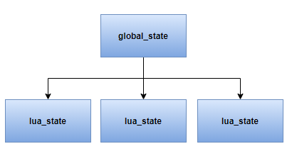
-
协程提供了新的
api接口和lua_resetthread,coroutine.close会使协程进入死亡状态,并且关闭所有的close变量
send.call 流程
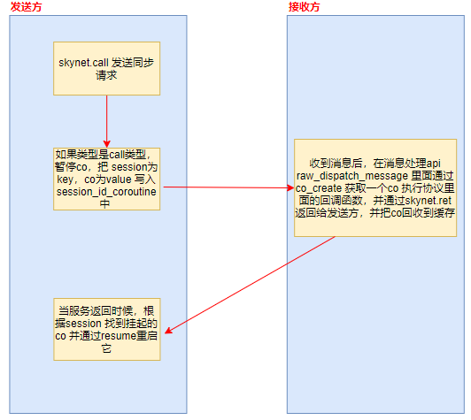
API 相关
cluster
cluster.call(node, address, ...) --远程调用node中的addr
cluster.send(node, address, ...) --send调用远程node的addr
cluster.open(port) --本地打开(监听)一个cluster结点，使其能在cluster中的其他结点发现
cluster.reload(config) --重载远程结点配置表，表中的cluster结点都open过，则可以通讯
cluster.proxy(node, name) --设置远程结点的代理，使得可以像调用本地RPC一样调用远程结点
cluster.snax(node, name, address) --生成一个远程的snax服务对象
cluster.register(name, addr) --注册一个cluster结点
cluster.query(node, name) --查找远程结点中注册过的结点是否存在
harbor
harbor.link(id) --用来监控一个 slave 是否断开。如果 harbor id 对应的 slave 正常，这个 api 将阻塞。当 slave 断开时，会立刻返回。
harbor.linkmaster() --用来在 slave 上监控和 master 的连接是否正常。这个 api 多用于异常时的安全退出（因为当 slave 和 master 断开后，没有手段可以恢复）。
harbor.connect(id) --和 harbor.link 相反。如果 harbor id 对应的 slave 没有连接，这个 api 将阻塞，一直到它连上来才返回。
harbor.queryname(name) --可以用来查询全局名字或本地名字对应的服务地址。它是一个阻塞调用。
harbor.globalname(name, handle) --注册一个全局名字。如果 handle 为空，则注册自己。skynet.name 和 skynet.register 是用其实现的。
构建服务的一些基础接口
skynet.getenv(varName) --conf配置信息已经写入到注册表中，通过该函数获取注册表的变量值
skynet.setenv(varName, varValue) --设置注册表信息，varValue一般是number或string，但是不能设置已经存在的varname
skynet.error(...) --打印函数
skynet.start(func) --用 func 函数初始化服务，并将消息处理函数注册到 C 层，让该服务可以工作。
skynet.init(func) --若服务尚未初始化完成，则注册一个函数等服务初始化阶段再执行；若服务已经初始化完成，则立刻运行该函数。
skynet.exit() --结束当前服务
skynet.self() --获取当前服务的句柄handler
skynet.address(handler) --将handle转换成字符串
skynet.abort() --退出skynet进程
skynet.kill(address) ----强制杀死其他服务。可以用来强制关闭别的服务。但强烈不推荐这样做。因为对象会在任意一条消息处理完毕后，毫无征兆的退出。所以推荐的做法是，发送一条消息，让对方自己善后以及调用 skynet.exit 。注：skynet.kill(skynet.self()) 不完全等价于 skynet.exit() ，后者更安全。
普通服务
skynet.newservice(luaServerName, ...)
全局唯一服务
skynet.uniqueservice(servicename, ...) --当前的skynet节点全局唯一
skynet.uniqueservice(true, servicename, ...) --所有的节点全局唯一
skynet.queryservice(servicename, ...) --当前的skynet节点中查找
skynet.queryservice(true, servicename, ...) --所有的节点中查找
别名
别名分两种：
-
本地别名 代表只能在当前
skynet节点使用，本地别名用.开头 -
全局别名 可以在所有的
skynet中使用 全局别名不能以.开头
skynet.register(aliasname) --给当前服务定一个别名，可以是全局别名，也可以是本地别名
skynet.name(aliasname, servicehandler) --给指定servicehandler的服务定一个别名，可以是全局别名，也可以是本地别名
--[[
查询别名为aliasname的服务,可以是全局别名也可以是本地别名，
1、当查询本地别名时，返回servicehandler，不存在就返回nil
2、当查询全局别名时，返回servicehandler，不存在就阻塞等待到该服务初始化完成
]]--
skynet.harbor.queryname(aliasname)
skynet.localname(aliasname) --查询本地别名为aliasname的服务，返回servicehandler，不存在就返回nil
skynet.kill(handle) --杀死带别名服务
服务调度
skynet.sleep(time) --让当前的任务等待 time * 0.01s 。
skynet.fork(func, ...) --启动一个新的任务去执行函数 func , 其实就是开了一个协程，函数调用完成将返回线程句柄 虽然你也可以使用原生的coroutine.create来创建协程，但是会打乱skynet的工作流程
skynet.yield() --让出当前的任务执行流程，使本服务内其它任务有机会执行，随后会继续运行。
skynet.wait() --让出当前的任务执行流程，直到用 wakeup 唤醒它。
skynet.wakeup(co) --唤醒用 wait 或 sleep 处于等待状态的任务。
skynet.timeout(time, func) --设定一个定时触发函数 func ，在 time * 0.01s 后触发。
skynet.starttime() --返回当前进程的启动 UTC 时间（秒）。
skynet.now() --返回当前进程启动后经过的时间 (0.01 秒) 。
skynet.time() --通过 starttime 和 now 计算出当前 UTC 时间（秒）。
消息类型
#define PTYPE_TEXT 0 --文本
#define PTYPE_RESPONSE 1 --表示一个回应包
#define PTYPE_MULTICAST 2 --广播消息
#define PTYPE_CLIENT 3 --用来处理网络客户端的请求消息
#define PTYPE_SYSTEM 4 --系统消息
#define PTYPE_HARBOR 5 --集群内其他的 skynet 节点发来的消息
#define PTYPE_SOCKET 6 --套接字消息
#define PTYPE_ERROR 7 --错误消息，一般服务退出的时候会发送error消息给关联的服务
#define PTYPE_QUEUE 8 --队列方式
#define PTYPE_DEBUG 9 --调试
#define PTYPE_LUA 10 --lua类型的消息，最常用
#define PTYPE_SNAX 11 --snax服务消息
#define PTYPE_TAG_DONTCOPY 0x10000 --禁止拷贝
#define PTYPE_TAG_ALLOCSESSION 0x20000 --分配新的 session
打包解包
skynet.pack(...) --打包
skynet.unpack(msg, sz) --解包
发送消息
-- 发送无需响应的消息
skynet.send(addr, type, ...) --用 type 类型向 addr 发送未打包的消息。该函数会自动把...参数列表进行打包，默认情况下lua消息使用skynet.pack打包。addr可以是服务句柄也可以是别名。自动打包与解包。）
skynet.rawsend(addr, type, msg, sz) --用 type 类型向 addr 发送一个打包好的消息。addr可以是服务句柄也可以是别名。（需要自己打包与解包）
-- 发送必须响应的消息
skynet.call(addr, type, ...) --用默认函数打包消息，向addr发送type类型的消息并等待返回响应，并对回应信息进行解包。（自动打包与解包。）
skynet.rawcall(addr, type, msg, sz) --直接向addr发送type类型的msg,sz并等待返回响应，不对回应信息解包。（需要自己打包与解包）
响应消息
-- 同一个协成处理
skynet.ret() --目标服务消息处理后需要通过该函数将结果返回
skynet.retpack(...) --将消息用skynet.pack 打包，并调用 ret 回应。
--不在一个协成处理
local response = skynet.response(pack)--参数pack指定应答打包函数，不填默认使用skynet.pack, 必须根据接收到消息的打包函数一致 返回值是一个闭包函数
response(ok, ...) --参数ok的值可以是 "test"、true、false，为"test"时表示检查接收响应的服务是否存在，为true时表示发送应答PTYPE_RESPONSE，为false时表示发送PTYPE_ERROR错误消息。
消息冲入时序问题
skynet.queue() --帮助你回避这些服务重入或者伪并发引起的复杂性,但是明显降低了服务的并发处理能力，所以使用执行队列的时候尽量缩小临界区的颗粒度大小
协议转换
skynet.forward_type() --需要提供一张消息转换映射表forward_map, 其他的方法与skynet.start一样
伪造消息
skynet.redirect(dest,source,typename, session, msg, sz) --使用source服务地址，发送typename类型的消息给dest服务，不需要接收响应，（source，dest只能是服务ID）msg sz一般使用skynet.pack打包生成
组播
skynet.multicast -- 当组播的数据量较大时候可以节省内部的带宽
socket
--建立一个 TCP 连接。返回一个数字 id 。
socket.open(address, port)
--关闭一个连接，这个 API 有可能阻塞住执行流。因为如果有其它 coroutine
--正在阻塞读这个 id 对应的连接，会先驱使读操作结束，close 操作才返回。
socket.close(id)
--在极其罕见的情况下，需要粗暴的直接关闭某个连接，而避免 socket.close 的阻塞等待流程，可以使用它。
socket.close_fd(id)
--强行关闭一个连接。和 close 不同的是，它不会等待可能存在的其它 coroutine 的读操作。
--一般不建议使用这个 API ，但如果你需要在 __gc 元方法中关闭连接的话，
--shutdown 是一个比 close 更好的选择（因为在 gc 过程中无法切换 coroutine）。与close_fd类似
socket.shutdown(id)
--[[
从一个 socket 上读 sz 指定的字节数。
如果读到了指定长度的字符串，它把这个字符串返回。
如果连接断开导致字节数不够，将返回一个 false 加上读到的字符串。
如果 sz 为 nil ，则返回尽可能多的字节数，但至少读一个字节（若无新数据，会阻塞）。
--]]
socket.read(id, sz)
--从一个 socket 上读所有的数据，直到 socket 主动断开，或在其它 coroutine 用 socket.close 关闭它。
socket.readall(id)
--从一个 socket 上读一行数据。sep 指行分割符。默认的 sep 为 "\n"。读到的字符串是不包含这个分割符的。
--如果另外一端就关闭了，那么这个时候会返回一个nil，如果buffer中有未读数据则作为第二个返回值返回。
socket.readline(id, sep)
--等待一个 socket 可读。
socket.block(id)
--把一个字符串置入正常的写队列，skynet 框架会在 socket 可写时发送它。
socket.write(id, str)
--把字符串写入低优先级队列。如果正常的写队列还有写操作未完成时，低优先级队列上的数据永远不会被发出。
--只有在正常写队列为空时，才会处理低优先级队列。但是，每次写的字符串都可以看成原子操作。
--不会只发送一半，然后转去发送正常写队列的数据。
socket.lwrite(id, str)
--监听一个端口，返回一个 id ，供 start 使用。
socket.listen(address, port)
--[[
accept 是一个函数。每当一个监听的 id 对应的 socket 上有连接接入的时候，都会调用 accept 函数。
这个函数会得到接入连接的 id 以及 ip 地址。你可以做后续操作。
每当 accept 函数获得一个新的 socket id 后，并不会立即收到这个 socket 上的数据。
这是因为，我们有时会希望把这个 socket 的操作权转让给别的服务去处理。accept(id, addr)
]]--
socket.start(id , accept)
--[[
任何一个服务只有在调用 socket.start(id) 之后，才可以读到这个 socket 上的数据。
向一个 socket id 写数据也需要先调用 start 。
socket 的 id 对于整个 skynet 节点都是公开的。也就是说，你可以把 id 这个数字
通过消息发送给其它服务，其他服务也可以去操作它。skynet 框架是根据调用 start 这个
api 的位置来决定把对应 socket 上的数据转发到哪里去的。
--]]
socket.start(id)
--清除 socket id 在本服务内的数据结构，但并不关闭这个 socket 。
--这可以用于你把 id 发送给其它服务，以转交 socket 的控制权。
socket.abandon(id)
--[[
当 id 对应的 socket 上待发的数据超过 1M 字节后，系统将回调 callback 以示警告。
function callback(id, size) 回调函数接收两个参数 id 和 size ，size 的单位是 K 。
如果你不设回调，那么将每增加 64K 利用 skynet.error 写一行错误信息。
--]]
socket.warning(id, callback)
socketChannel
用来支持双向传输，异步非堵塞处理数据
dns
skynet.dns --调用了系统 api getaddrinfo ，有可能阻塞住整个 socket 线程 所以skynet封装了这个接口来解决dns查询时候造成的线程堵塞问题
skynet 的通信调试pack
-
客户端按大小端打包成二进制
local result = string.pack(">s2","string2pack") pack > 表示按大端顺序。s2 表示按照2个字节打包。 我们知道string由char组成。1个char 是 0-255 之间的数，2^8 ,1char=8byte 需要注意的是，他除了被打包的部分之外，还会在前面加2个字节，表示长度。 如果要打包一个数字则需要转换。由2种办法 string.pack("I2",number)，会在前面二进制加2位表示长度的东西。 -
socket发送
socket.send -
服务端接收
gateserver已经有接收的代码了。 注意的是，socket会自动按pack的数据分段接收。也就是会根据pack的前面2位得到size。根据size去接收后面的数据。然后向上传递一份message。 接收到的message已经是去掉了前面2位的数据。 -
客户端接收
户端接收到的数据目前我是用skynet提供的“client.socket”.没有netpack可用。 接收到的数据需要自行去除前面的2个字节的数据（string.pack产生的）。
skynet clientsocket 导致 io.read 无法正确工作的问题
https://blog.csdn.net/gneveek/article/details/78940693